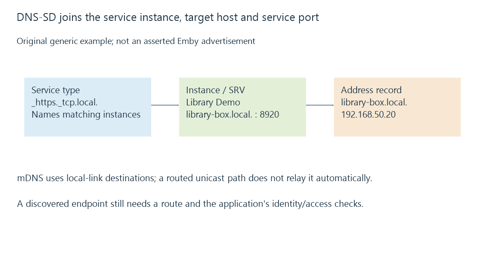

Multicast DNS and local-link naming
Multicast DNS resolves specified names on a local link through participating responders, with DNS-based service discovery adding service-instance and endpoint information.
A supporting device can resolve a name such as library-box.local by asking participants on its local link instead of consulting one authoritative internet DNS server.
Multicast DNS, or mDNS, uses DNS-like messages with local-link delivery and its own coordination rules.
The multicast destination identifies participants
The familiar IPv4 destination is 224.0.0.251 on UDP port 5353; the IPv6 link-local multicast equivalent is ff02::fb.
Participants can answer for the names and records they advertise. Name conflict detection and record lifetimes matter because unrelated devices might otherwise try to use the same local label.
A central household DNS record with a .local suffix does not guarantee that every client will ask that DNS server. A client implementing .local multicast resolution can select another mechanism.
The home.arpa convention provides a separately specified home-network naming context.
Service discovery adds more than a host address
DNS-Based Service Discovery, defined separately in RFC 6763, can associate a service type with instances, a target host and a port.
This original reduced generic example shows the joins:
{
"serviceType": "_https._tcp.local.",
"instance": "Library Demo._https._tcp.local.",
"srv": {"target": "library-box.local.", "port": 8920},
"address": {"name": "library-box.local.", "type": "A", "value": "192.168.50.20"}
}
The service instance is not itself the host’s address. The SRV target needs its relevant address lookup, and the port belongs to the service endpoint.

These are explanatory fields, not wire DNS packets or a claim that Emby advertises this service instance.
The local link is a real boundary
A client and server on different VLANs or on a routed VPN can have a permitted unicast connection while local multicast discovery does not cross between them.
Moving the unicast packet route does not automatically relay every discovery message. A configured reflector/proxy can supply additional behavior, with its own scope and policy.
Conversely, relaying discovery can make an address visible without giving the client a working route to that address. The later endpoint still needs to be usable in the receiving realm.
Discovery is not server authentication
A supplied name or service description identifies a candidate endpoint. It does not prove who controls the later application service.
For HTTPS, the application’s peer/certificate checks supply another identity stage. Access to Emby also needs the intended server/user relationship.
Emby server discovery uses its own documented UDP exchange. Sharing a home network and UDP transport does not make that exchange identical to mDNS.
See Also
- DNS resolution, record types and cached answers
- SSDP discovery, advertisements and service locations
- Emby server discovery and advertised endpoints
- VPN access and the routed path to a media server